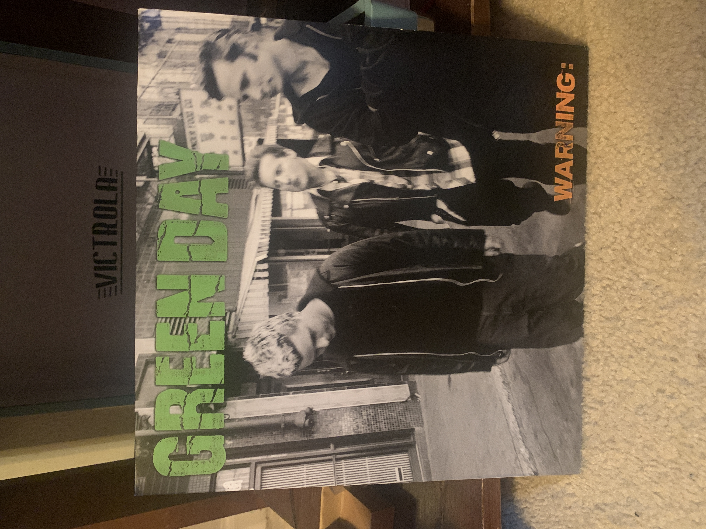
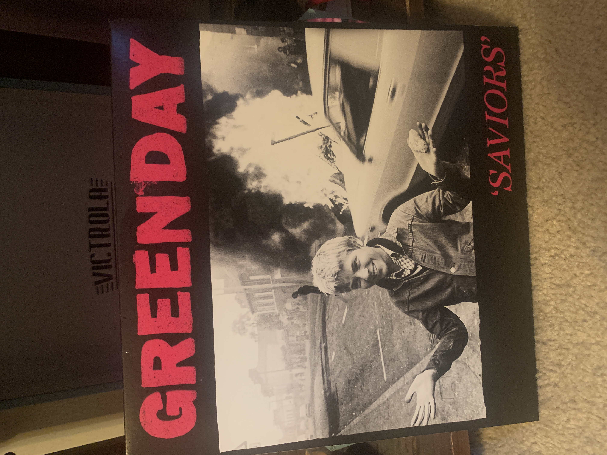
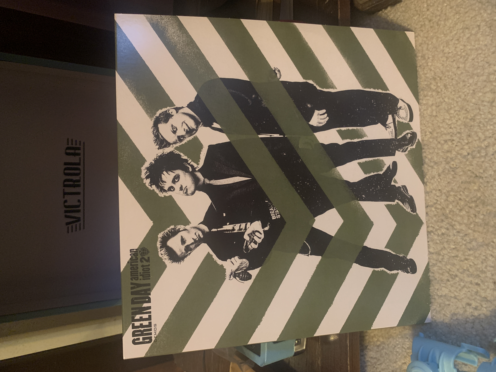
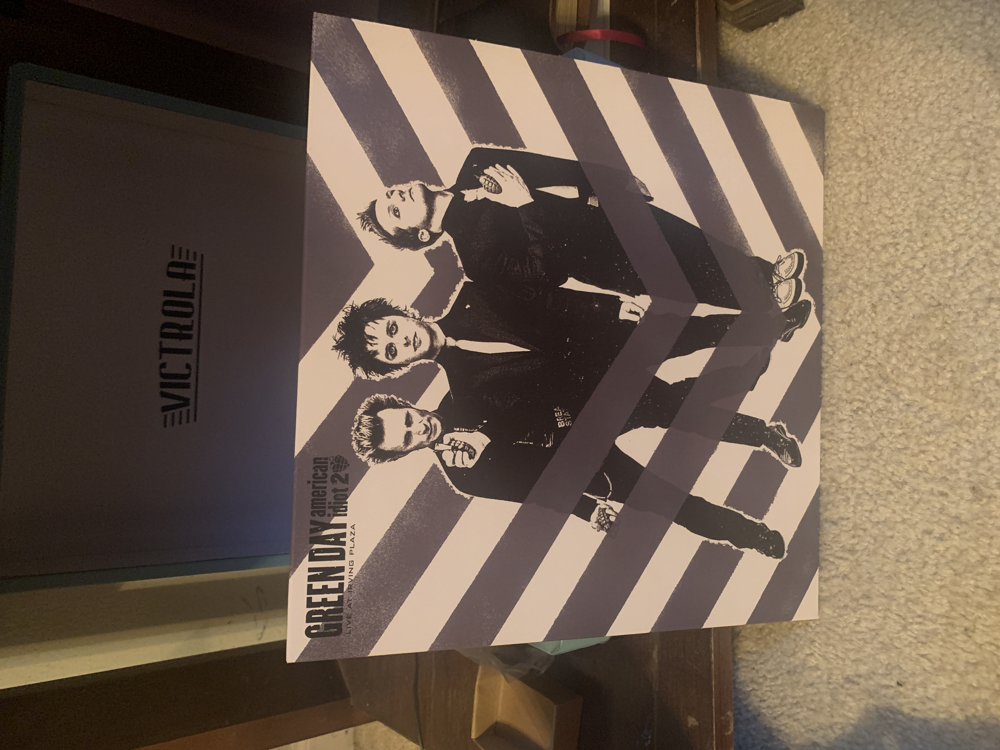
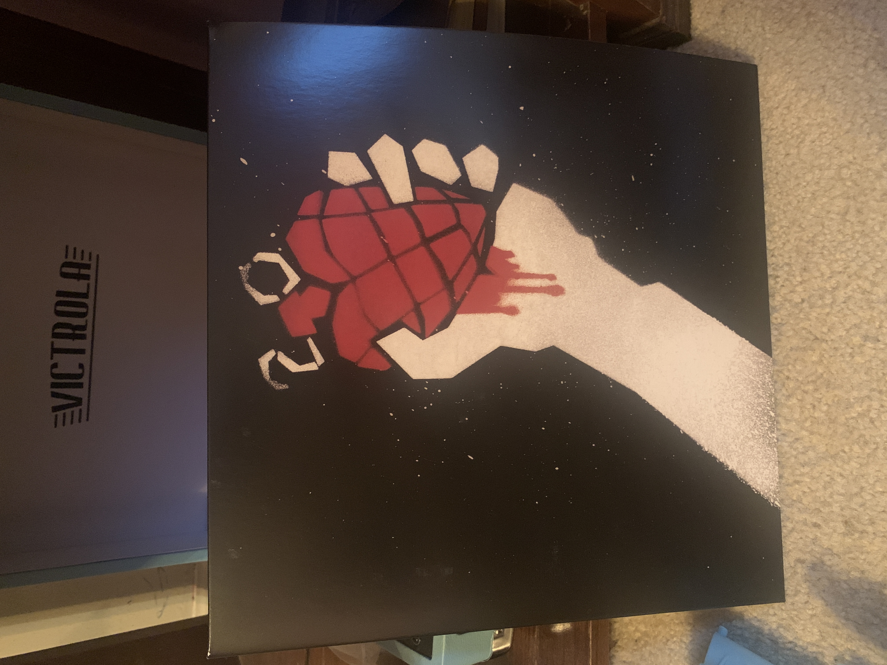
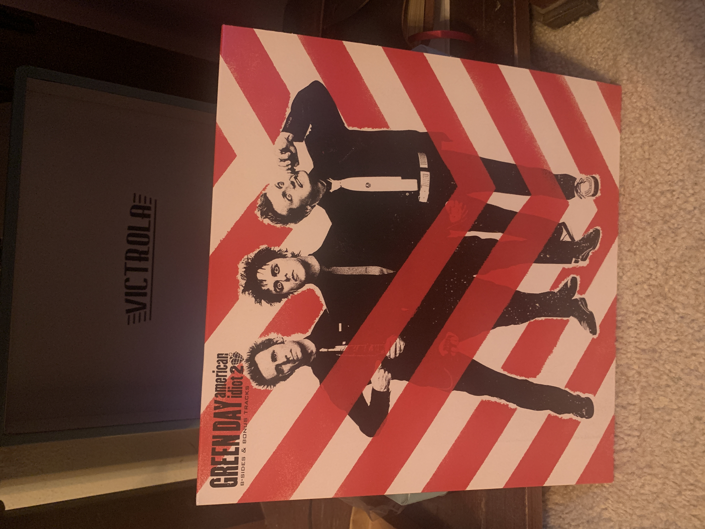

It's all Green Day...

- Macy's Day Parade, Warning 2000, Green Day
-
There is a calmness to this song that just soothes. It creates a
sense of safety while complaining about how capitalism and
consumerism has consumed us. Every verse is set up like a
different commercial or infomercial and I love it. The way this
song is written is what makes me love it and not just what it's
about.
Bobby Sox, Saviors 2024, Green Day
This song is a true favorite. When I first listened, the queer
message really caught me off guard because it was natural
representation that I feel doesn't happen enough. It isn't a big
part of queer culture, just apart of love song culture in a
sense. It makes me feel seen in my identity as a normal thing,
which feels very rare these days.


- Too Dumb To Die, Revolution radio 2016, Green Day
-
This song contains my favorite line in any written piece of music in
exists- "He said everything will be alright, not every sunday can be
Easter". It is a masterpiece of a line and just ignites my soul.
Missing You, Tre 2012, Green Day
This song is on this list purely for the play on words. It's another
love song but is just so genius. Of course it's about missing the
person you love, but it goes deeper than that. It uses "missing"
literally. Saying that with you physically missing from my life,
like a lost item, I myself am lost; but in a sweet joking way that
is just amazing.


Last Night on Earth, 21st Century Breakdown 2009, Green Day
Last Night on Earth is THE modern love ballad. It starts of the song by bringing in the sweetness and sincerity of love letters but through text and makes it beautiful instead of corny. It such a true and vulnerable decleration of my love is yours. It is a 50/50 on if this song will make my day or make me cry.
